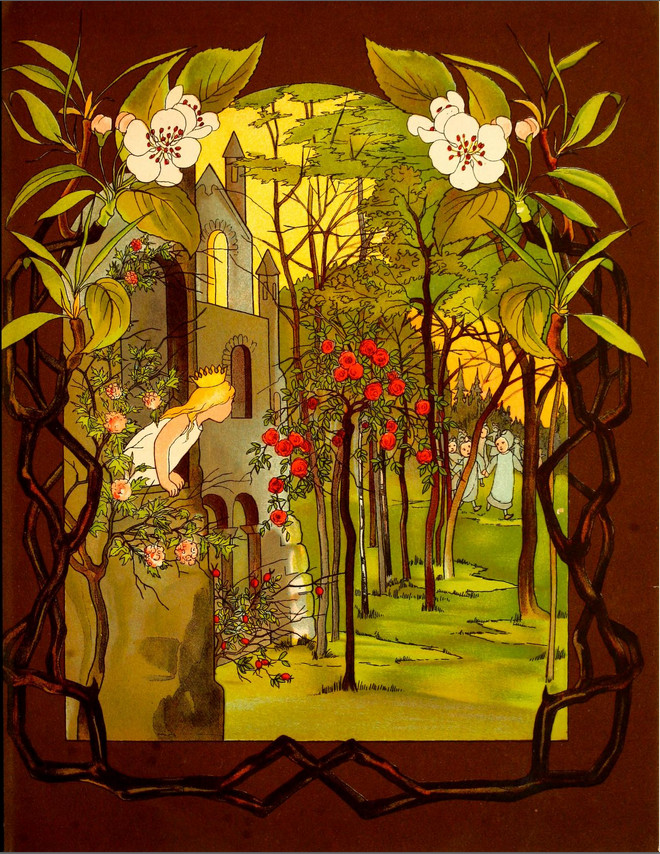
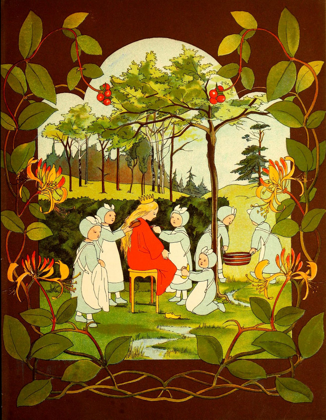
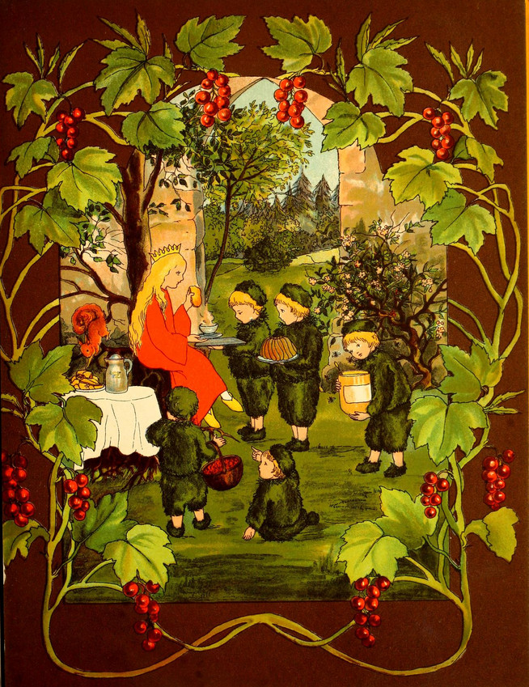
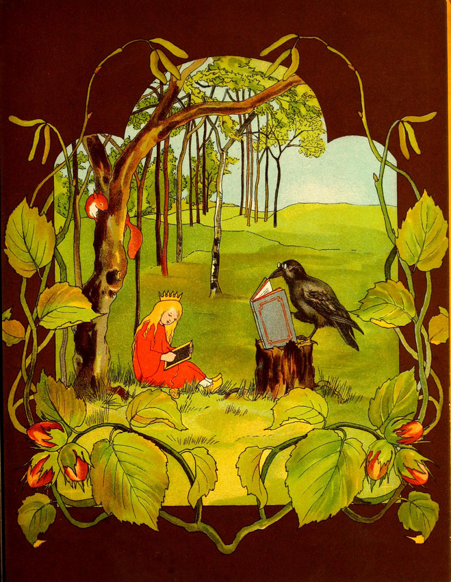
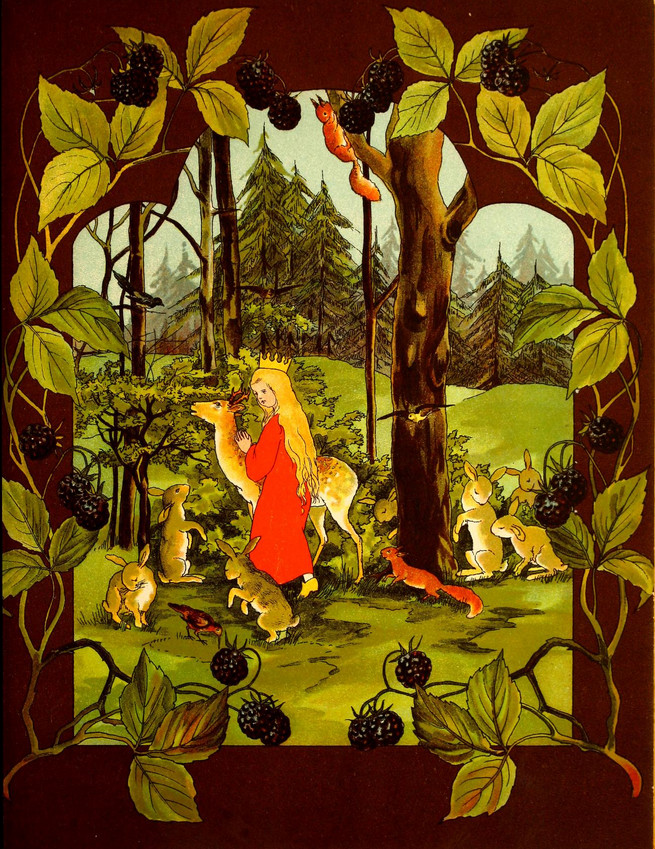
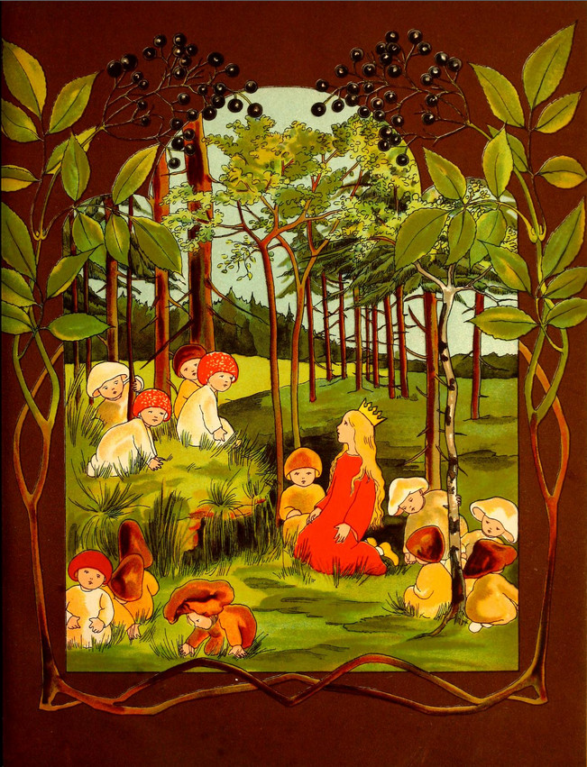
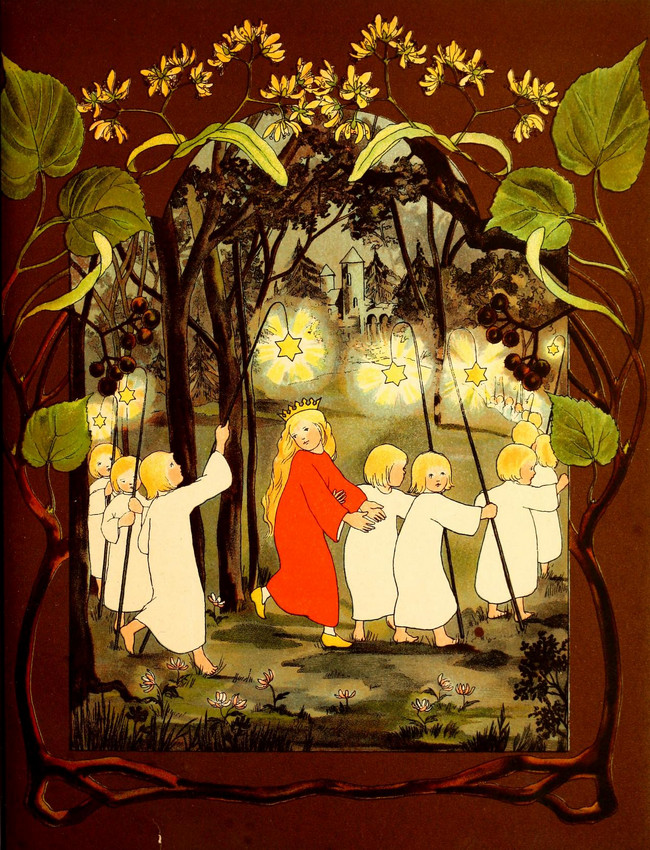
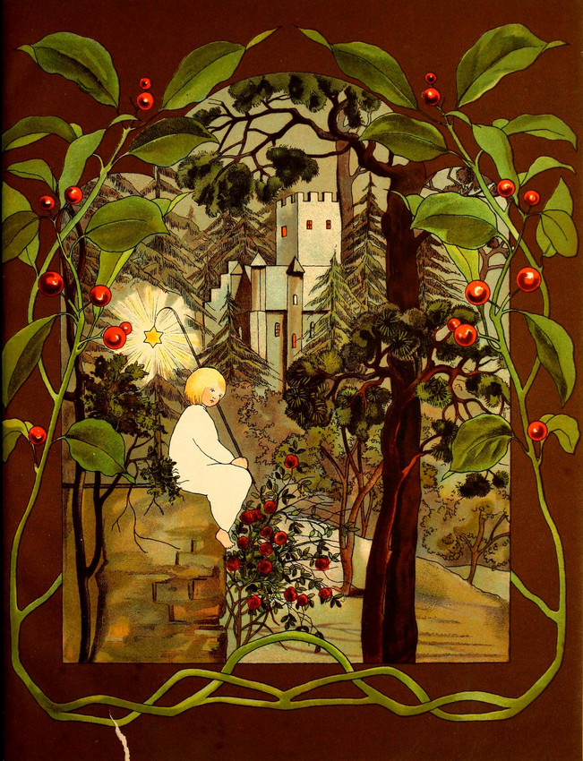

もりのなか もりの おひめさまが
まどから かおを のぞかせてみる
すると あさつゆの おんなのこが
そよかぜさんに いわれておまいり

おがわのほとり あさつゆみんなで
ひめさまの きらきら ふわふわな
かみを とかし まっかなドレスと
ぴかぴかのくつで みじたくおわり

おひめさまに あまい はちみつを
さっと もってくる こけのこたち
もんのそばの こかげの ひかげに
したくされた あさの おしょくじ

きらきらした ふちの こくばんに
せっせと てならいの おひめさま
からすせんせい ほんを くわえて
ちえを あれやこれや たたきこむ

おべんきょう おわりに こじかと
こうさぎと いっしょに えんそく
あと ついてくる りすに ことり
うきうきと たのしい おひめさま

もりの はずれ こけが ふかふか
きのこのこが すんでいる ところ
みいんな たのしい なかまたちで
おはなし するのが その やくめ

あかりを てにした ほしのこたち
もりのおくへ ひめを ごあんない
くらがりのなか ぶじ おうちまで
いっぱい あそんで もう えがお

もりの いきもの みんな すやり
おひめさまも おやすみの じかん
よかぜが そっと ざわめいている
ほしのこひとり おしろの みはり